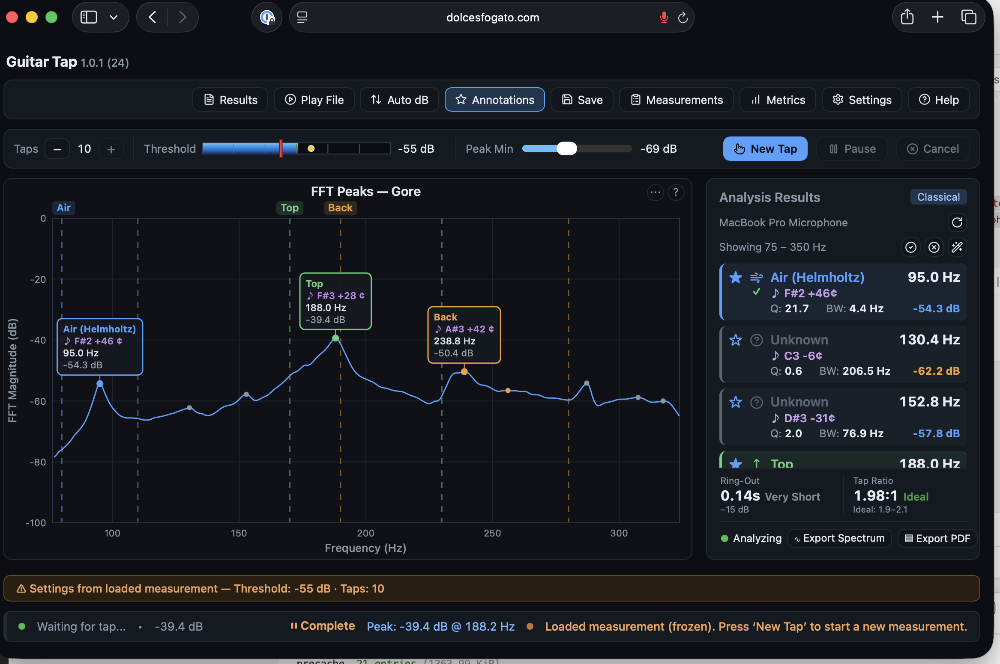
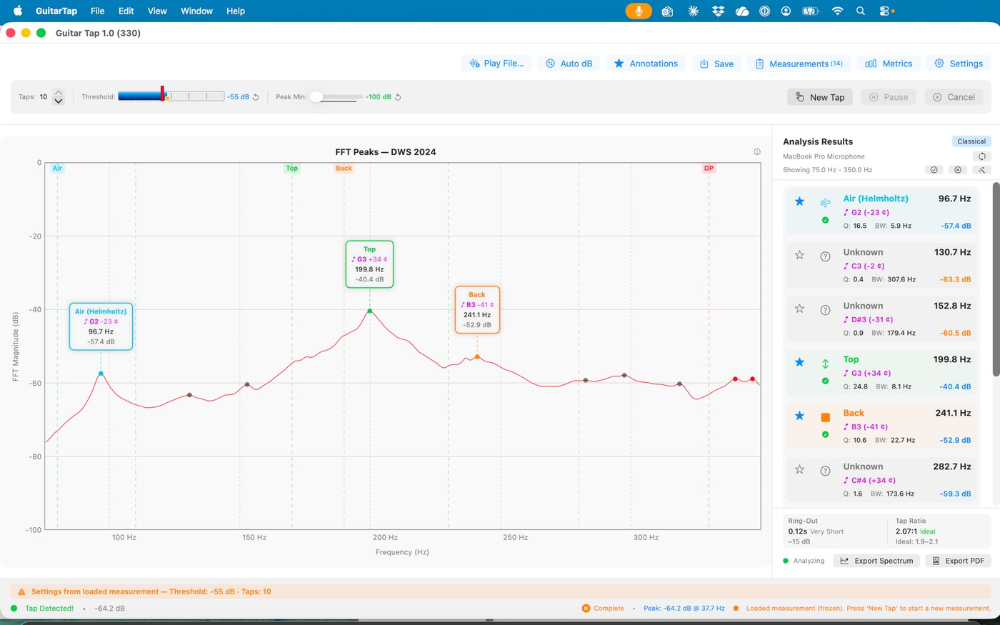
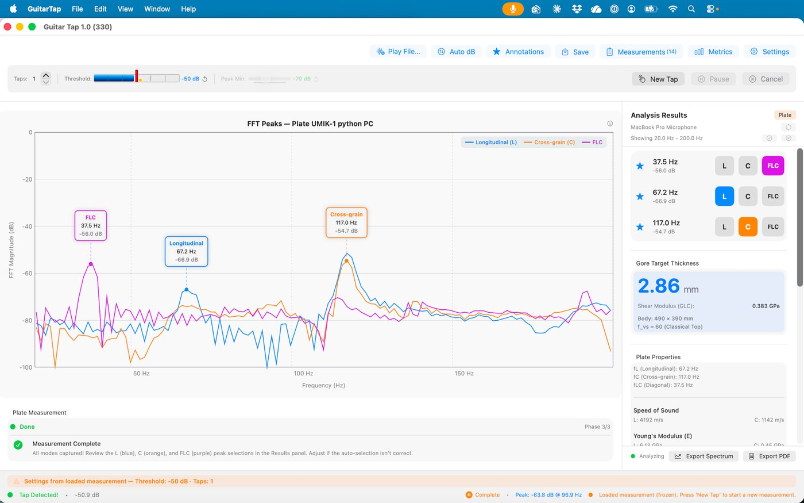
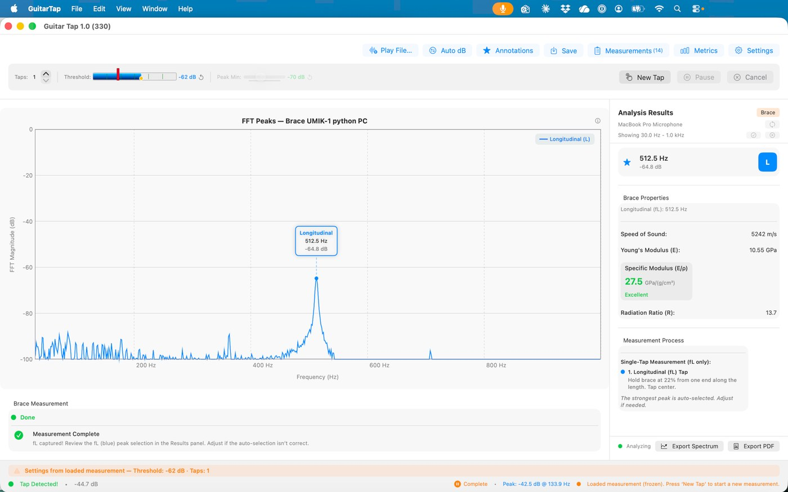
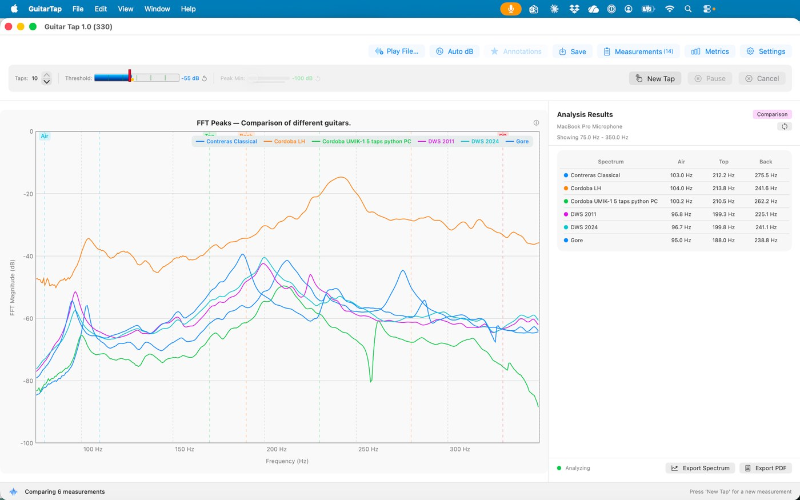
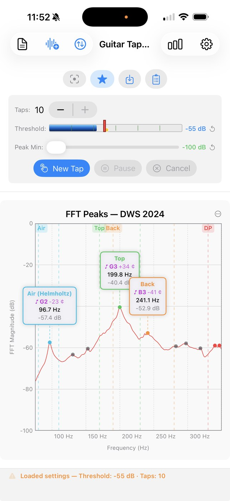
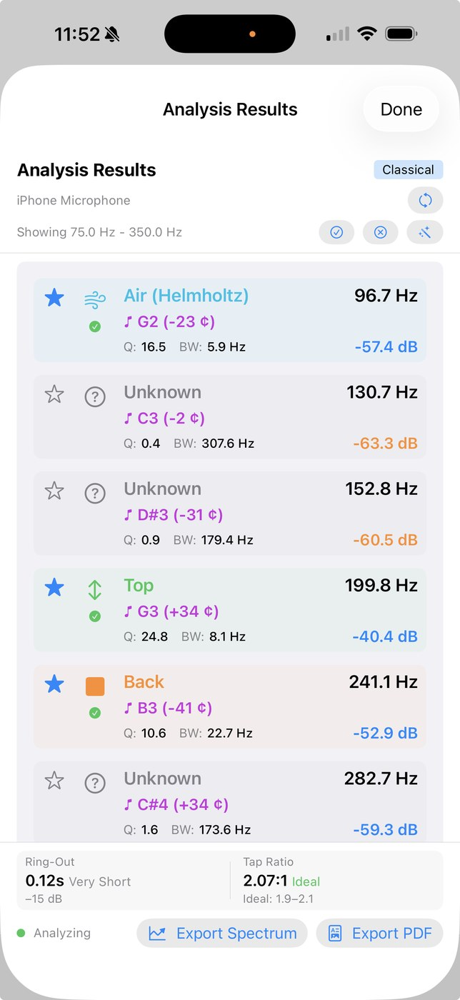
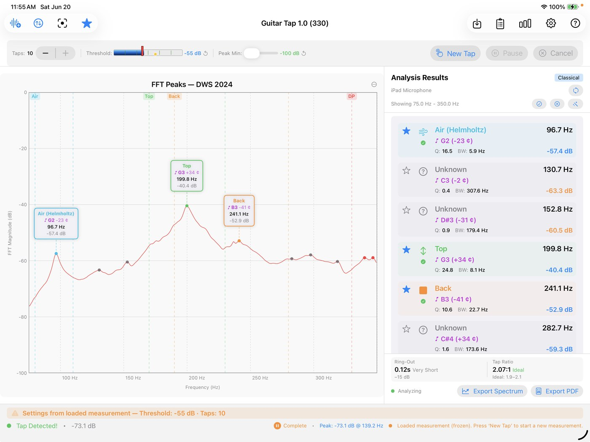

Guitar Tap
Improve your guitar quality by tapping.
Guitar Tap captures the sound of a tap on a guitar, tonewood plate, or brace, runs a high-resolution FFT, and reveals the resonant peaks and material properties that matter to luthiers. Use the results to guide your bracing, mass distribution, and plate thickness — methods drawn from Contemporary Acoustic Guitar Design and Build by Trevor Gore and Gerard Gilet.
Three ways to use Guitar Tap
Guitar Tap for iPhone, iPad & Mac
The polished native app — real-time spectrum, automatic tap capture, guitar / plate / brace measurement modes, saved measurements, comparison overlays, and PDF reports. One purchase works on all your Apple devices.
$14.99 — iPhone, iPad, and Mac (single purchase)
Guitar Tap in your browser
The same analysis engine, free in any modern browser — nothing to buy, nothing to install. Capture a tap, watch the live spectrum, measure guitars, plates, and braces, and keep your measurement library saved locally. Works in Chrome, Safari, and Edge on desktop and mobile, and installs as an app for a standalone window and durable storage (see below).
Free — runs in your browser
Open the web appGuitar Tap (open source)
A free, open-source edition for Windows, macOS, and Linux. Install a prebuilt release or build it yourself from source — and contribute on GitHub. Each download includes its own quick-start guide for the open-source edition; the shared User Manual below applies to every edition.
Free & open source
Download releases Source on GitHubInstall the browser app (optional)
The web app runs fine in a browser tab, but installing it as a Progressive Web App gives it an app icon, a standalone window, and durable local storage for your saved measurements.
- Chrome / Edge (desktop): click the install icon at the right end of the address bar, or open the menu (⋮) and choose Install Guitar Tap…
- Chrome (Android): open the menu (⋮) and choose Add to Home screen / Install app.
- Safari (iPhone / iPad): tap Share, then Add to Home Screen.
- Safari (Mac, macOS Sonoma or later): choose File → Add to Dock.
On iOS, installing also keeps your saved-measurement library from being cleared by the browser (which can happen after about a week unused). Use Export All in Saved Measurements to keep a portable backup.
What it measures
Guitar mode
Identify the key body resonances — Air (Helmholtz), Top, Back, and more — each labeled with frequency, pitch, and Q factor, plus the tap-tone ratio.
Plate mode
Measure a tonewood blank: Young's modulus along and across the grain, speed of sound, specific modulus, radiation ratio, a quality grade, and a Gore target thickness.
Brace mode
A fast single-tap measurement of a brace strip's stiffness, speed of sound, specific modulus, and quality.
See it in action
Screenshots from the browser app and the native Apple app — the open-source edition shares the same analysis engine and views.








Documentation & help
The User Manual covers every edition. The Quick-Start Guides differ by edition: the Apple app's is linked below; the open-source edition's is included in its download; the browser app has a built-in Quick Start under its Help menu.
- 📖 User Manual — online (shared)
- 📄 User Manual — PDF (shared)
- ⚡ Quick-Start Guide — iPhone, iPad & Mac (PDF)
- 🆕 Release Notes — what's new, both editions
- 🎸 Example measurement — sample file, spectrum image & PDF report
- 💬 Support
- 🔒 Privacy Policy
Learn more
Guitar Tap implements the tap-tone methodology from Contemporary Acoustic Guitar Design and Build by Trevor Gore and Gerard Gilet. To go deeper on lutherie technique, see the Lutherie Academy.
Support open-source development
The open-source edition of Guitar Tap is free and built in spare time. If it helps your work, a small donation keeps it maintained and improving — thank you!
Donate via PayPal